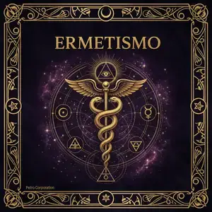

Ermetismo: la filosofia dei Sette Principi Universali

Ermete Trismegisto e le origini del pensiero ermetico
Ermete Trismegisto — letteralmente "Thoth il Tre Volte Grande" — è la figura leggendaria al centro della tradizione ermetica: per i Greci dell'Egitto ellenistico nasce dalla fusione di Thoth, dio egizio della scrittura e della magia, e Hermes, messaggero greco degli dei. Gli scritti a lui attribuiti, raccolti nel Corpus Hermeticum, furono probabilmente composti tra il I e il III secolo d.C. ad Alessandria d'Egitto, crocevia intellettuale del mondo antico, anche se la leggenda lo vuole contemporaneo — o maestro — di Mosè. Nel 1463 Cosimo de' Medici incaricò Marsilio Ficino di tradurre in latino i manoscritti appena giunti da Costantinopoli, con un ordine perentorio: prima di Platone. Il Rinascimento europeo ne fu scosso alle fondamenta.
Il testo ermetico più noto è la Tabula Smaragdina, la Tavola Smeraldina: tredici versetti che la leggenda vuole incisi su una lastra di smeraldo trovata nella tomba di Ermete. La sua frase più celebre — "come in alto, così in basso, come nell'interno, così nell'esterno" — è diventata il codice segreto di ogni praticante esoterico attraverso i secoli. Il testo fu probabilmente scritto in aramaico o greco tra il VI e l'VIII secolo, circolò nelle traduzioni arabe medievali e raggiunse l'Europa latina nel XII secolo. Persino Isaac Newton ne possedeva una copia personale, studiata in modo quasi ossessivo durante le sue ricerche alchemiche.
La tradizione ermetica si è diffusa per quasi duemila anni attraverso contesti molto diversi: nell'Egitto ellenistico i circoli neoplatonici e gnostici di Alessandria la fondono con filosofia greca e misticismo ebraico; nell'Islam medievale traduttori come Jabir ibn Hayyan la preservano e la integrano nell'alchimia araba; nel Rinascimento italiano Ficino, Pico della Mirandola e Giordano Bruno la trasformano nella filosofia segreta delle corti; nell'età moderna rinasce attraverso la Massoneria, la Teosofia di Helena Blavatsky e l'Ordine Ermetico della Golden Dawn, fondato a Londra nel 1888.
Il Kybalion e l'eredità moderna dei Sette Principi
Il nome con cui oggi conosciamo i "Sette Principi Ermetici" deriva dal Kybalion, pubblicato nel 1908 da autori firmatisi "Tre Iniziati", probabilmente guidati da William Walker Atkinson. Non è un manoscritto antico, ma una riformulazione in linguaggio accessibile dei concetti ermetici tradizionali: Mentalismo, Corrispondenza, Vibrazione, Polarità, Ritmo, Causa-Effetto e Genere. Tradotto in decine di lingue, resta il testo introduttivo all'ermetismo più letto del XX e XXI secolo, e la porta d'accesso più diffusa a questa tradizione.
Un errore comune è considerare i Sette Principi come semplici massime motivazionali: nella tradizione ermetica sono invece leggi operative, da applicare con disciplina quotidiana e da verificare nell'esperienza diretta, non da accettare per fede. Un altro malinteso frequente è confondere l'ermetismo con la magia cerimoniale o con l'alchimia: in realtà queste sono applicazioni pratiche di una filosofia più ampia, che riguarda il rapporto tra mente, cosmo e trasformazione personale. A differenza dei Tarocchi o delle Rune, che sono strumenti divinatori, l'ermetismo è un sistema di pensiero — una mappa per interpretare la realtà, non per predirla.
Il Laboratorio Alchemico
Gli ermetisti medievali lavoravano in laboratori segreti, distillando e calcinando sostanze fisiche come metafora della trasformazione interiore. Il lavoro sulla materia era simultaneamente lavoro sull'anima.
La Corrispondenza Astrologica
Ogni pianeta, metallo, erba e parte del corpo erano in corrispondenza ermetica. Operare sull'uno significava operare sull'altro: astrologo, medico e mago erano spesso la stessa persona.
Il Grimorio Personale
L'adepto ermetico teneva un diario segreto — il grimorio — dove annotava osservazioni, meditazioni e corrispondenze. Era il libro della vita interiore, mai mostrato a nessuno.
Il Lavoro Notturno
Molte pratiche ermetiche si svolgevano di notte, quando il silenzio della mente razionale permette ai livelli più profondi della coscienza di emergere. La notte era "il laboratorio del Cielo".
La Catena di Trasmissione
La conoscenza ermetica non si leggeva soltanto: si riceveva. Ogni adepto aveva un maestro e diventava maestro a sua volta, perché la trasmissione orale diretta era ritenuta indispensabile.
📖 Il Poimandres — La Mente del Sovrano
▼Il primo e più importante testo del Corpus. Ermete riceve una visione cosmica della creazione: la Mente universale gli rivela l'origine del cosmo, la caduta dell'anima nella materia e la via del ritorno — una cosmogonia che riecheggia i miti di discesa e ascesa di molte culture.
📖 L'Asclepius — Dio e il Mondo
▼Il dialogo tra Ermete e Asclepio esplora la relazione tra divino e materiale. Contiene la celebre "Lamentazione ermetica", una profezia sulla caduta della saggezza egiziana sorprendentemente vicina agli eventi storici successivi.
📖 Il Kybalion — Sintesi Moderna
▼Pubblicato nel 1908 da "Tre Iniziati", è la sintesi moderna più accessibile dei principi ermetici. Non è un testo antico, ma una formulazione in linguaggio contemporaneo, tradotta in decine di lingue.
💎 La Leggenda della Tomba di Ermete
Secondo una tradizione medievale, Alessandro Magno — durante la conquista dell'Egitto nel 332 a.C. — trovò la tomba di Ermete Trismegisto sotto la Grande Piramide, con la Tavola Smeraldina in mano alla mummia. La leggenda è quasi certamente apocrifa, ma riflette l'idea che la saggezza più profonda sia rivelata solo a chi possiede la chiave interiore.
🌙 L'Ordine della Golden Dawn
Fondata a Londra nel 1888 da tre massoni e un manoscritto cifrato di dubbia provenienza, l'Ordine Ermetico della Golden Dawn divenne la più influente scuola di magia pratica dell'era moderna. Tra i suoi membri: il poeta W.B. Yeats, il mago Aleister Crowley, l'occultista Dion Fortune. Si dissolse nel 1903, ma il suo sistema è ancora vivo in decine di scuole contemporanee.